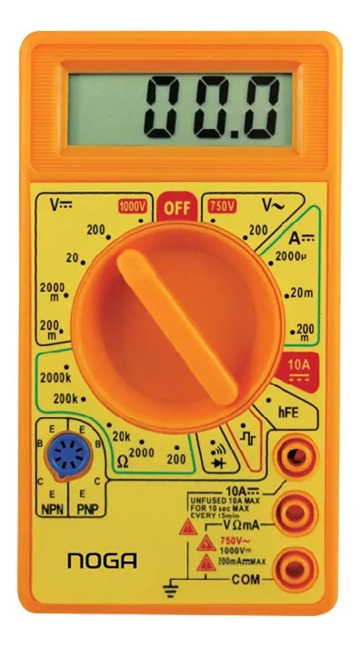

Las tres herramientas esenciales
Antes de seguir líneas, dominá las herramientas que te permiten medir y simular condiciones reales del equipo.
Definición: dispositivo que entrega voltaje y corriente regulados. En reparación, simula la batería y permite observar el consumo en tiempo real.
Función en diagnóstico: simula la batería, enciende el equipo de forma controlada, detecta cortos mediante el límite de corriente y muestra patrones de consumo.
Por qué es esencial: transforma un "cambio de piezas" en un diagnóstico técnico basado en mediciones.
Definición: instrumento de medición eléctrica que permite leer voltaje, resistencia, continuidad y corriente.
Función en diagnóstico: confirma si una línea está presente, detecta líneas abiertas o cortocircuitadas y valida el estado de la batería o puerto de carga.
Uso práctico: mediciones en VBUS, BATT, líneas LDO/BUCK y test points.
Definición: medidor en serie entre cargador y dispositivo para leer voltaje y corriente de carga.
Función en diagnóstico: detecta si el equipo negocia carga, si el consumo es coherente y si hay cortes intermitentes.
Valor en taller: rápido para clasificar fallas de carga sin abrir el equipo.
Configuración profesional de la fuente
Seguí estos pasos antes de conectar cualquier equipo.
Simula una batería de litio completamente cargada. No superar este valor.
Permite el arranque y protege la placa en caso de corto.
Rojo (+) a BATT, negro (−) a GND. Un error destruye componentes.
Conectar y observar: entre 10 mA y 80 mA es stand-by normal.
Práctica: configurar la fuente virtual
Referencia rápida
4.20 V3.0 AEscala de lectura
1.000 A = 1000 mA
0.100 A = 100 mA
0.010 A = 10 mA
0.001 A = 1 mA
Reconocer funciones del multímetro
Escribí cuatro funciones válidas del multímetro. Pueden ser modos de medición o tipos de prueba.

Ejemplos válidos: voltaje, corriente, resistencia, continuidad, diodo, DC, AC…